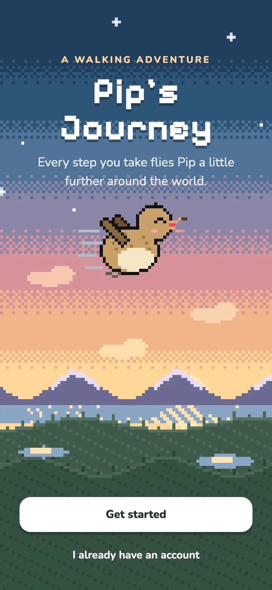
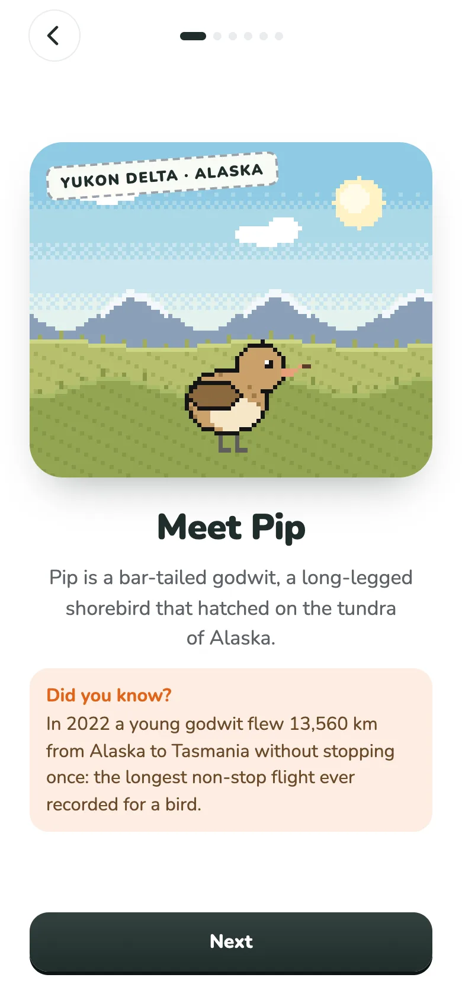
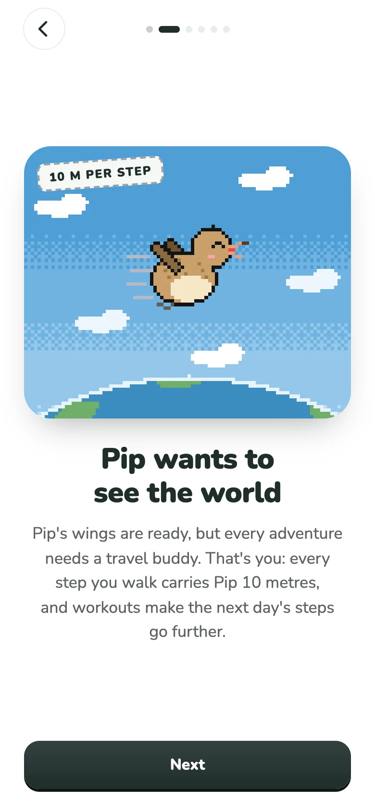
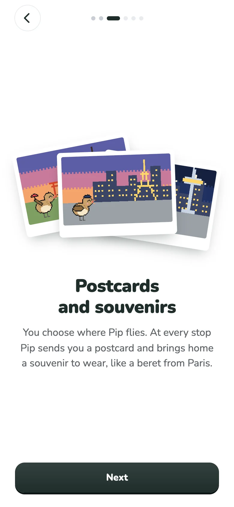
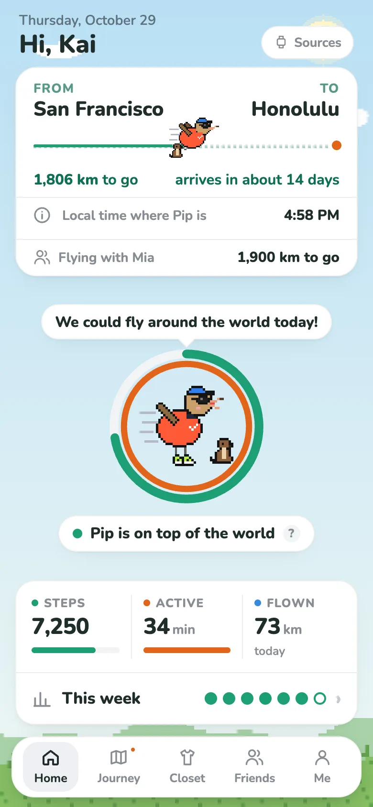
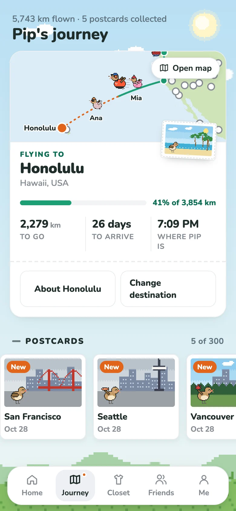
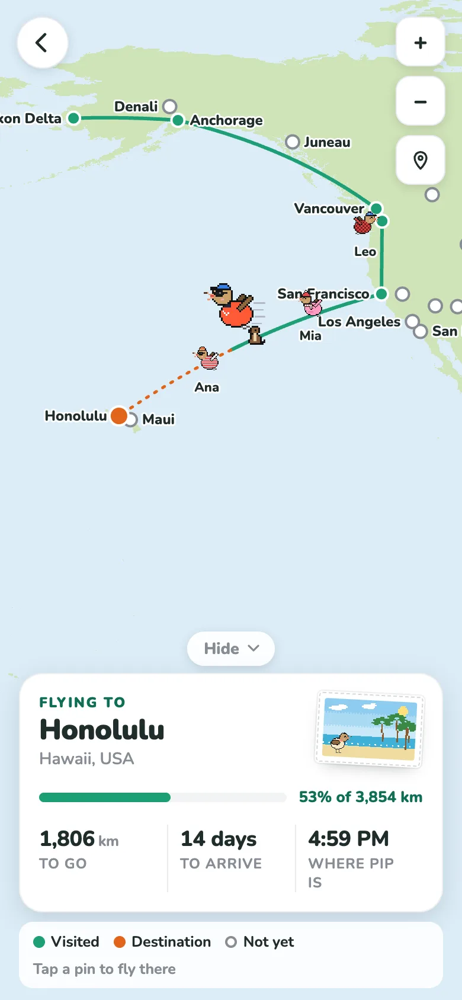
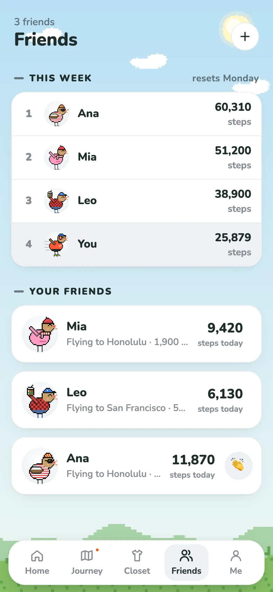
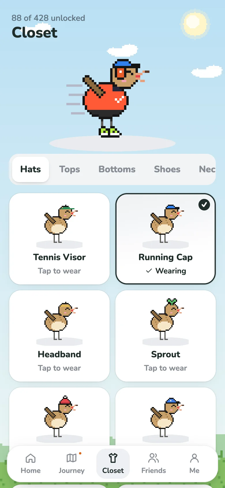
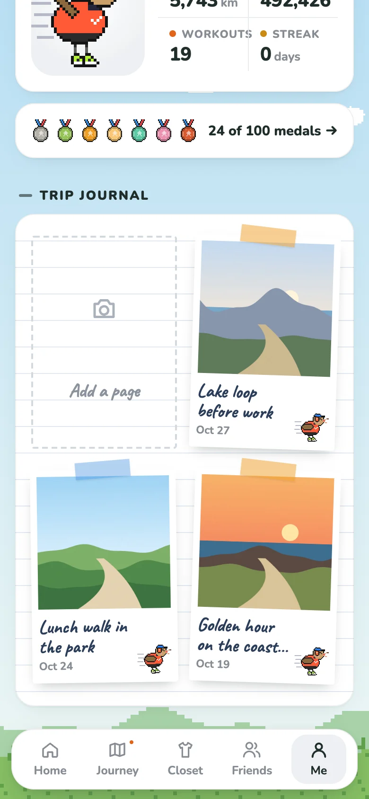

A look inside
The first few screens, then the app itself.
- Getting started

WelcomePip sets off from a dawn sky over Alaska. - Getting started

Meet PipA bar-tailed godwit, the bird with the longest non-stop flight on record. - Getting started

You're the travel buddyEvery step carries Pip 10 metres. Workouts make tomorrow's steps go further. - Getting started

Postcards and souvenirsChoose where Pip flies. Every stop sends a postcard and a souvenir to wear. - In the app

HomeToday's flight, Pip's mood, your steps and active minutes, and the week at a glance. - In the app

The journeyWhere Pip is headed, when Pip arrives, and every postcard so far. - In the app

World mapFollow the route, and see your friends' Pips flying beside yours. - In the app

Fly with friendsA weekly leaderboard, cheers, and trips to the same place together. - In the app

ClosetOver 400 outfits, perches, pets and scenes to dress Pip up in. - In the app

Trip journalPhotos from your walks, stamped with where Pip was that day.
How it works
- Any watch or fitness appSteps come from Health Connect on Android or Apple Health on iPhone, so Samsung Health, Fitbit, Garmin, Strava and others all count.
- A real routePip flies between real places, from Alaska to wherever you choose next, with a postcard from each stop.
- A bird with moodsPip is happiest when you hit your goal, and a little restless on quiet days.
- Medals and titlesA hundred medals to earn, including seasonal ones for being where wild godwits are.
Your steps stay yours
No ads and no trackers. Everything stays on your phone unless you choose to back it up with an account, and only friends you add can see your Pip. Read the privacy policy.
Try it early
Pip's Journey is in testing on Android. Want to help shape it? Email journeywithpip@gmail.com and we'll send you the tester link.